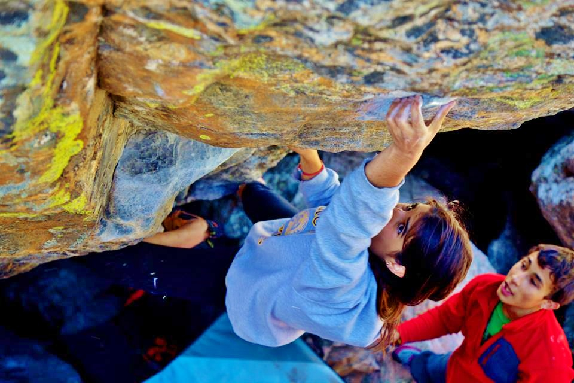

My name is Francesca Caiazzo, but I have always gone by Frankie. I was born in Maplewood, New Jersey in 1995 and have moved three times since. I called Richmond, Virginia home for six years. Richmond was followed by four years in Saint Louis, Missouri. Now, I call Somerville, Massachussetts home as I pursue a degree in Computer Science from Tufts University. I am the youngest child of three and the only daughter. My oldest brother recieved a degree in Economics from Hampden Sydney University and works as a financial analyst for Wells Fargo Advisors. My other brother recieved a degree in Civil Engineering from Northeastern University, works at a civil engineering company and is a professional cyclist riding for GreenLine Velo.

While living in Richmond, I went rock climbing for the first time at Peak Experiences Indoor Rock Climbing Gym. I was eight years old and the day marked a definite shift in the path I would follow for the rest of my life. While I was growing up, I was a member of two different competitive climbing teams, one in Richmond and one in St. Louis. I competed in five national championships and travelled the country competing. I got my first assistant coaching job in St. Louis the summer after my freshman year at Tufts. Today, I proudly coach for one of the most talented competitive climbing teams in the Boston area. I continue to pursue my own career as a climber every day and in the spring of 2015 I competed at my first Open National Championship. While competitive climbing is an exciting aspect of the sport, I am more drawn to travelling the nation and the world to pursue climbing outdoors. I have spent time climbinofteng in Colorado, New Hampshire, Missouri, Maine, Kentucky, Illinois, Rhode Island, Utah, and Spain.
My coaching job is only a facet of my life in Medford and I devote the majority of my time to studying Computer Science at Tufts. I arrived at Tufts in the fall of 2013 with every intent of acquiring a degree in Cogntive and Brain Sciences. However, the major required introductory programming skills and I found that programming held my attention and my excitement in a much more powerful way than CBS did. I hope to pursue a career in software development and am enjoying the knowledge I gain from my Tufts Education every day.